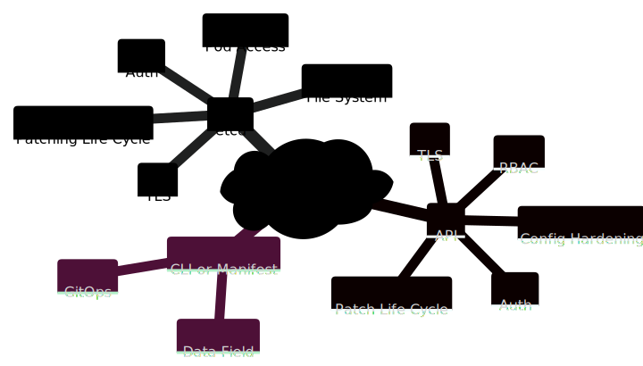
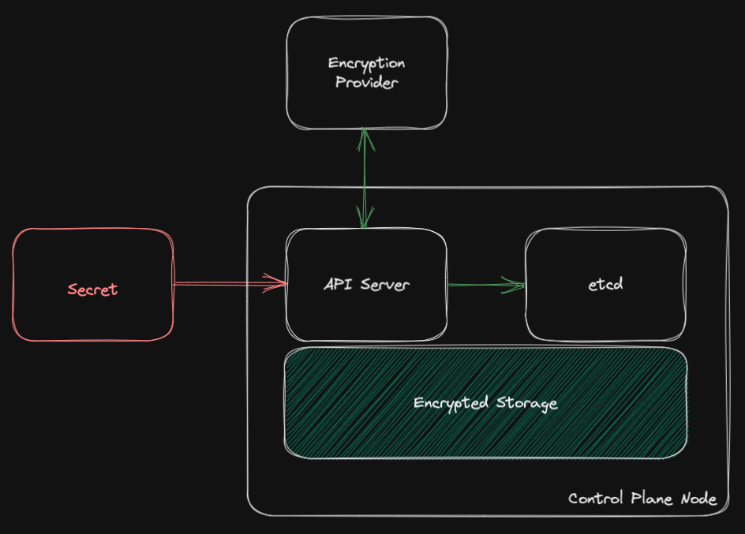

Keep your Secrets secret!
Introductory Material
Kubernetes Security
Kubernetes is all about providing a high level of abstraction to reduce the application lifecycle dependency on the "from what the entire infrastructure stack is composed of, how it is configured and maintained". Interesting enough, the DevOps movement tries to build bridges to ease the collaboration between the Dev and Ops teams while Kubernetes provides an easy path to a self-service experience for Application teams with a fully decorrelation with the underlying platform.
The absraction does not reduce the importance of architecturing, building and maintaining a platform within the industry and policy required practices to improve reslience and decrease the risks of cybersecurity breach. Considering the latter, the journey to secure an container platform is overwheelming. The below mindmap helps to define at a high level the different components requiring attention. Here is an example of such mindmap, work in progress and not a definite/static diagram:

This document is focusing on the Secrets component listed within the above diagram.
Kubernetes Secret Object
From an architecture standpoint, Kubernetes has a critical dependency on etcd, a key value store, acting as a distributed CMDB tracking the states of every components (from nodes, to config map, to services, ...).
If etcd fails, the entire cluster will collaspe. If it is hacked, the entire cluster, workloads, and third party components are compromised.
Yet, etcd does not provide any encryption capabilities. Instead, the data field of each Kubernetes API object (e.g. Secrets and ConfigMap), composed or not of sensitive data, will be encoded in base64 to protect the data integrity during client-server exchanges.
Architecture Overview
The below diagram illustrates the Creation opertion workflow of a Kubernetes Secret object:
Info
For this diagram, the data field flows through a series of component, usually TLS encupsulated. However, the origin and destination are considered unsafe due to the lack of data encryption.
sequenceDiagram
participant User or App
participant etcd
participant API Server
autonumber
User or App->>API Server: create Secret mysecret
Note right of User or App: base64 encoded data field
API Server->>etcd: store SecretOperation Overview
Let's consider an application in needs of credentials to connect to an endpoint. These values need to be encoded in based64 to avoid being truncated.
echo 'admin' | base64
echo 'p@ssw0rd$' | base64
These encoded values can be inserted within an YAML manifest like:
Warning
While convenient from a GitOps perspective, the YAML manifest is optional as secrets can be create using the kubectl create secret command.
However, the manifest is unsafe; the data field values can be then decoded on any system giving back the original values.
---
apiVersion: v1
kind: Secret
metadata:
name: mysecret
namespace: myapp
type: Opaque
data:
USERNAME: YWRtaW4K
PASSWORD: cEBzc3cwcmQkCg==
kubectl apply -f mysecret.yml
Iterative Design
Case Study
Attack Surface Overview
Let's zoom in on the mindmap focusing on Kubernetes CRUD operations to define the potential attack surface and build an iterative mitigation path.

etcd
Overview
By design, etcd provides a TLS for transport and authentication but no encryption capabilities. The project's mitigations offered are:
- Let client applications encrypt and decrypt the data
- Use a feature of underlying storage systems for encrypting stored data like dm-crypt
In other words, these two options refer to:
- from a Kubernetes perspective, clients are the CLI toolings via the API server;
- tools like
kubectlor others would have encryption capabilities to secure the data field.
However, within the context of Kubernetes and its workload, it would require both the API server and the applications to somehow know that the data field is encrypted and how to decrypt for CRUD operations. - the Kubernetes API server has an encryption at rest configuration API object
EncryptionConfigurationto configure encryption providers. This approach streamlines the process as every CRUD operations depends on the API server which will handle the encryption/decryption requests.
- tools like
- from a deployment perspective, etcd will consume available storage from the master node(s), storage that could be encrypted using different options, one being dm-crypt.
Mitigation
While the CLI tooling approach might address the unsecure manifest and ease GitOps practice, it would be a rather significant implementation. Reducing the implementation complexity by using the existing EncryptionConfiguration would ease the consumption of secrets but leave the Ops with an unsecure manifest.
While using the EncryptionConfiguration protects the data field for Secrets and ConfigMap, it does not encrypt all the other API object definition like Pods, Services, StatefulSet, ...
While encrypting the data at the disk/file system level will protect any CRUD operations on the etcd content being written on disk, it will not protect against unauthorized etcd client access.
Therefore, both options are required to reduce the blast radius.
Success
Encrypt all master node(s) disk or/and any storage endpoint used by etcd.
Leverage the Kubernetes EncryptionConfiguration to handle data field encryption operation via the API server and a defined provider (See API for more details).
Bug
A request for enhancement to the Kubernetes project might be required to provide encryption for every API object definition.

Manifest
Overview
One would consider to simply use the kubectl command to create the secret and it would be fine if the workstation is hardened to avoid memory and console footprints. This would reduce the autonomy and velocity of an agile development leveraging a container platform as it will require a manual request to the credential owner to inject the secret with the platform before any deployment activities.
Another would consider that applications have to rely on a Key Management Service (KMS) to retrieve their secrets instead of using the unsecure etcd. This approach removes the security burden of managing secrets within Kubernetes. While from application/workload perspective it might be feasible, Kubernetes core components might not be able to for resilience reasons. If a core component, network or storage related, would not be able to access the KMS to retrieve. Here are some examples:
- network components like CoreDNS, NGINX, ...
- storage components like Ceph, Ondat, ...
- persistent volume being encrypted at rest and storing their encryption key as secrets
- cert-manager storing the private certificate
- Service Accounts
Here is two example of secrets created by a freshly deployed Kubernetes clusters from different vendors:
[root@localhost ~]# oc get nodes -A
NAME STATUS ROLES AGE VERSION
crc-t6jgr-master-0 Ready master,worker 44d v1.24.6+5157800
[root@localhost ~]# oc get secrets -A |wc -l
834
[root@localhost ~]# oc get secrets -A
...
hostpath-provisioner csi-hostpath-provisioner-sa-dockercfg-d7xnc kubernetes.io/dockercfg 1 43d
hostpath-provisioner csi-hostpath-provisioner-sa-token-wvrpf kubernetes.io/service-account-token 4 43d
hostpath-provisioner csi-provisioner-dockercfg-ddb6w kubernetes.io/dockercfg 1 43d
hostpath-provisioner csi-provisioner-token-jgq9b kubernetes.io/service-account-token 4 43d
...
openshift-apiserver-operator openshift-apiserver-operator-dockercfg-ffh89 kubernetes.io/dockercfg 1 44d
openshift-apiserver-operator openshift-apiserver-operator-serving-cert kubernetes.io/tls 2 44d
openshift-apiserver-operator openshift-apiserver-operator-token-79c76 kubernetes.io/service-account-token 4 44d
...
openshift-config etcd-client kubernetes.io/tls 2 44d
openshift-config etcd-metric-client kubernetes.io/tls 2 44d
openshift-config etcd-metric-signer kubernetes.io/tls 2 44d
openshift-config etcd-signer kubernetes.io/tls 2 44d
openshift-config htpass-secret Opaque 1 43d
openshift-config initial-service-account-private-key Opaque 1 44d
openshift-config login-template Opaque 1 43d
openshift-config pull-secret kubernetes.io/dockerconfigjson 1 44d
openshift-config support Opaque 1 44d
openshift-config webhook-authentication-integrated-oauth Opaque 1 44d
...
openshift-sdn sdn-controller-metrics-certs kubernetes.io/tls 2 44d
openshift-sdn sdn-controller-token-77dpc kubernetes.io/service-account-token 4 44d
openshift-sdn sdn-dockercfg-vp4kz kubernetes.io/dockercfg 1 44d
openshift-sdn sdn-metrics-certs kubernetes.io/tls 2 44d
[root@localhost ~]# kubectl get nodes -A
NAME STATUS ROLES AGE VERSION
localhost.localdomain Ready control-plane,etcd,master 7m12s v1.24.9+rke2r1
[root@localhost ~]# kubectl get secrets -A
NAMESPACE NAME TYPE DATA AGE
kube-system localhost.localdomain.node-password.rke2 Opaque 1 7m6s
kube-system rke2-ingress-nginx-admission Opaque 3 6m16s
kube-system rke2-serving kubernetes.io/tls 2 7m7s
kube-system sh.helm.release.v1.rke2-canal.v1 helm.sh/release.v1 1 6m54s
kube-system sh.helm.release.v1.rke2-coredns.v1 helm.sh/release.v1 1 6m54s
kube-system sh.helm.release.v1.rke2-ingress-nginx.v1 helm.sh/release.v1 1 6m22s
kube-system sh.helm.release.v1.rke2-metrics-server.v1 helm.sh/release.v1 1 6m22s
Considering the GitOps practice, revisioning a Kubernetes Secret manifest would be similar as providing the sensitive data to the entire organization, and even more in case of breach.